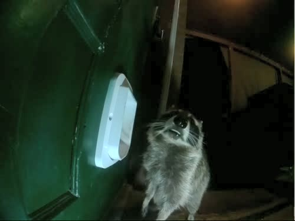

Private AI home camera system
Home cameras that record motion, have a vision language model running on my own GPU decide what's in each clip (person, cat, dog, raccoon), and send the result as phone alerts, spoken announcements on smart speakers, and a web app. (Raccoons get an extra-loud alert.) About 900 AI checks a day, tested against 139 hand-labeled clips, with a cost comparison against paid AI services.